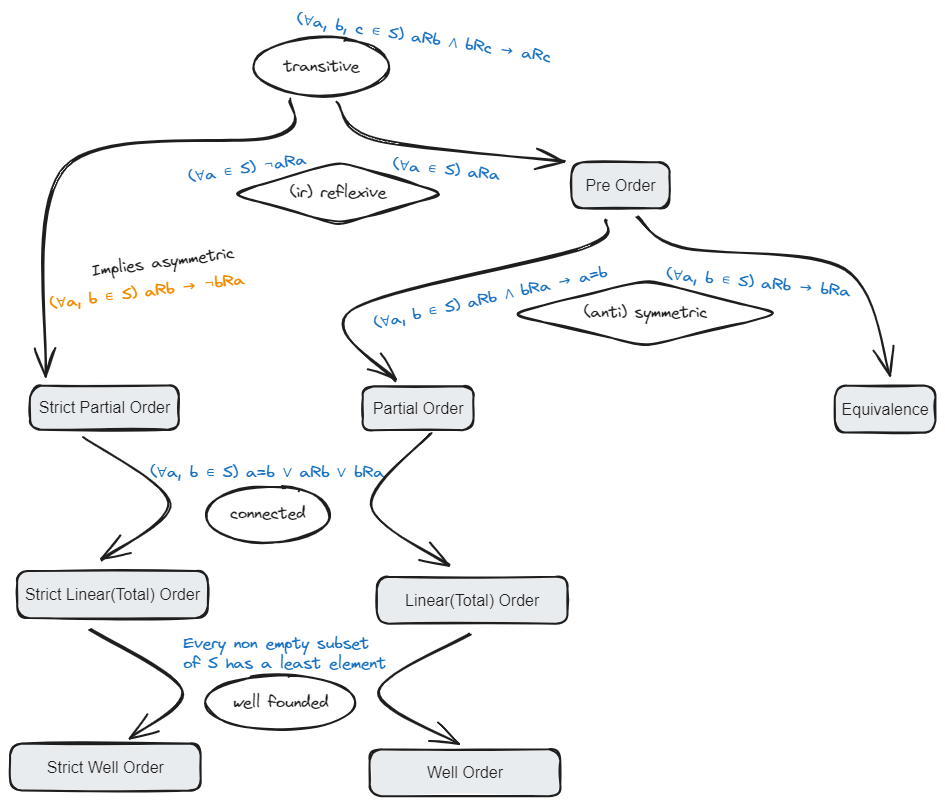
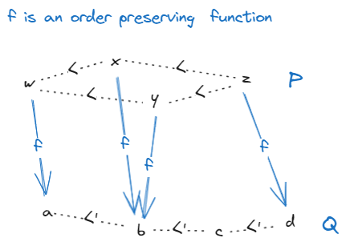
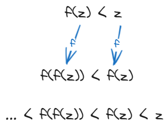
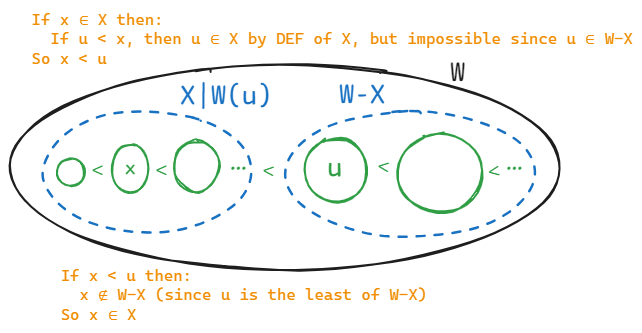

2. Ordinal Numbers (1) Ordering
2025-02-11
各种 Ordering
整理了个图表示各种序（Order）的关系 1：

transitive（传递性）\((\forall a,b,c \in S) \; aRb \land bRc \rightarrow aRc\) 是这些序共有的性质，表明它们都是可以“组合”的
传递性加上 irreflexive（反自反性）\((\forall a \in S) \; \neg aRa\) 就直接是 Strict Partial Order（严格偏序）
严格偏序其实还蕴含 asymmetric（非对称性）\((\forall a,b \in S) \; aRb \rightarrow \neg bRa\)，只要 \(aRb\) 成立则 \(bRa\) 不成立， 因为假如 \(aRb \land bRa\) 都成立则由传递性可得 \(aRa\)，与反自反性矛盾
传递性加上 reflexive（自反性）\((\forall a \in S) \; aRa\) 这一分支：
加上 symmetric（对称性）\((\forall a,b \in S) \; aRb \rightarrow bRa\) 就是熟悉的 Equivalence（等价关系）
加上 anti-symmetric（反对称性）\((\forall a,b \in S) \; aRb \land bRa \rightarrow a = b\) 则是 Partial Order（偏序）
其实反对称性也就是 \((\forall a,b \in S) \; a \neq b \rightarrow aRb \rightarrow \neg bRa\)，当 \(a,b\) 不同时满足非对称性
（严格）偏序加上 connected（连接性）\((\forall a,b \in S) \; a=b \lor aRb \lor bRa\) 就得到 (Strict) Total/Linear Order（（严格）全/线性序）
即任意两个不同的元素都是可以“比较”的了
前面的非对称性表示 \(aRb\) 和 \(bRa\) 不能同时存在，连接性则表示 \(aRb\) 或 \(bRa\) 必有存在
每一个元素都可以把整个集合（除它自己外）划分成两部分：所有“小于”它的和所有“大于”它的，没有第三种可能了
若 \((P, \lt)\) 是一个偏序集，\(X\) 非空且 \(X \subset P\) 且 \(a \in P\)，有如下定义：
- \(a\) 是 \(X\) 中的 maximal element 就是
\(a \in X\) 且 \(X\) 中不存在比它更大的：\(\neg (\exists x \in X) \; a < x\)
（偏序集里可能有多个）
- minimal element 类似
- \(a\) 是 \(X\) 中的 greatest element
就是 \(a \in X\) 且 \(X\) 中的元素都小于等于它：\((\forall x \in X) \; x \le a\)
- least element 类似
- \(a\) 是 \(X\) 的 upper bound 就是
\(X\)
中的元素都小于等于它：\((\forall x \in
X) \; x \le a\) （\(a\) 不必在
\(X\) 中）
- lower bound 类似
- \(a\) 是 \(X\) 的 supremum
(如果存在的话) 就是 \(a\) 是 \(X\) 的 upper bound 集合中的 least
element，记作 \(sup \; X\)
- infimum 类似，记作 \(inf \; X\)
假如 \((P, <)\) 和 \((Q, <')\) 是两个偏序集，假如 \(f: P \rightarrow Q\) 满足 \(x < y \rightarrow f(x) <' f(y)\)， 则称之为 order preserving function（保序函数），如果 \(P,Q\) 都是线性序，则也称之为 increasing function（增函数），例图：

假如 \(f: P \rightarrow Q\) 是一个双射函数且 \(f\) 和 \(f^{-1}\) 都是保序的，那么 \(f\) 是一个 \(P\) 和 \(Q\) 的 isomorphism（同构）
\(P\) 和自己的同构称为 automorphism（自同构）
同构就是不单止元素是一一对应的，而且元素间的关系也保持同样的结构
（严格）线性序加上 well-founded（良基性）（所有非空子集都有 least element） 就得到 (Strict) Well Order（（严格）良序）
不能只要求全局有 least element，假如整数集加上一个额外的奇异数并定义这个奇异数小于所有整数，那么全局是有最小的，但其子集整数集却没有最小的
Well-Ordering 的性质
Lemma 2.4. 如果 \((W, <)\) 是一个良序集 2，\(f: W \rightarrow W\) 是一个增函数，则 \((\forall x \in W) \; f(x) \ge x\)

直觉：如上图假如有一个 \(z\) 使得 \(f(z) < z\)，那么所有 \(f^n(z)\) 构成的集合是没有最小元素的，这跟良基性矛盾
假如集合 \(X = \{ x \in W: f(x) < x \}\) 非空，由良基性存在一个最小的元素 \(z\) 且 \(f(z) < z\)， 但因为 \(f\) 是增函数故 \(f(f(z)) < f(z)\) 所以 \(f(z) \in W\)，跟前面最小矛盾
Corollary 2.5. 良序集上的自同构只能是 identity 函数
如果 \(f\) 是自同构，那么 \(f\) 和 \(f^{-1}\) 都得是增函数，Lemma 2.4 可得 \(f(x) \ge x\) 以及 \(x = f^{-1}(f(x)) \ge f(x)\)，故 \(x = f(x)\)
Corollary 2.6. 如果两个良序集 \(W_1, W_2\) 是同构的，那么只有唯一一个同构函数
如果 \(f,g : W_1 \rightarrow W_2\) 是两个同构函数，那么 \(g^{-1} \cdot f\) （其逆函数 \(f^{-1} \cdot g\)）是一个 \(W_1\) 上的自同构 （因为 \(f,f^{-1},g,g^{-1}\) 都是双射增函数，其组合也是双射增的），由 Corollary 2.5. 知 \(g^{-1} \cdot f\) 只能是 identity， 即 \(f = g\)
定义：若 \(W\) 是良序集且 \(u \in W\)，那么 \(W(u) = \{ x \in W: x < u\}\) 称为（由 \(u\) 决定的）\(W\) 的一个 前段（initial segment），
另一种定义：\(W\) 的一个真子集 \(X\) 如果满足 \(x \in X, y \in W\) 且 \(y < x\) 则 \(y \in X\)，则 \(X\) 是 \(W\) 的一个前段 \(W(u)\)，其中 \(u\) 是 \(W - X\) 中的最小元素
对于 \(W\) 中的元素而言，\(u\) 大于且仅大于 \(X\) 中的那些元素，见下图

Lemma 2.7. 良序集不可能同构于其任何前段
假如有同构函数 \(f: W \rightarrow W(u)\)，所以它应该是一个增函数，但 \(f(u) < u\)，和 Lemma 2.4. 矛盾
Theorem 2.8. 如果 \(W_1,W_2\) 是两个良序集，那么必定恰好有以下其中之一成立
- \(W_1\) 和 \(W_2\) 同构
- \(W_1\) 和 \(W_2\) 的一个前段同构
- \(W_2\) 和 \(W_1\) 的一个前段同构
直觉：每次从 \(W_1,W_2\) 中剩下的各取最小的那个对应起来（因为 well-founded，所以总能找到最小的），一直到至少有其中一边取完
令
\[f = \{ (x, y) \in W_1 \times W_2 : W_1(x) \; is \; isomorphic \; to \; W_2(y) \}\]
由 Lemma 2.7. 可知 \(f\) 里的 pair 都是一一对应的，否则假如 \(y \neq z\) 且 \((x, y), (x, z) \in f\) 就会导致 \(W_2(y)\) 与 \(W_2(z)\) 同构（\(W_1\) 对称同理）
其次，假设 \((x, y) \in f\)，即 \(W_1(x)\) 和 \(W_2(y)\) 有同构 \(h\)，则对于任意 \((x', y') \in h\)，\(W_1(x')\) 和 \(W_2(y')\) 也是同构的，即 \((x', y') \in f\)
这是因为它们有同构 \(h' = \{ (a,b) \in h : a < x' \}\)：
- \(dom(h') = W_1(x')\)
- 若 \(a \in dom(h')\) 由 \(h'\) 定义知 \(a < x'\)
- 若 \(a < x'\) 则 \(a < x\) 所以 \((a, h(a)) \in h\) 则 \(a \in dom(h')\)
- \(rng(h') = W_2(y')\)
- 若 \(b \in rng(h')\) 由 \(h'\) 定义知 \(h^{-1}(b) < x'\) 即 \(b < h(x') = y'\)
- 若 \(b < y'\) 则 \(b < y\) 所以 \((h^{-1}(b), b) \in h\)，且 \(h^{-1}(b) < h^{-1}(y') = x'\)，故 \(b \in rng(h')\)
- \(h'\) 是一对一的，否则 \(h\) 就不是一对一的
- \(h'\) 是保序的，否则 \(h\) 就不是保序的
由于 \(dom(h) = W_1(x)\) 所以任意 \(x' < x\) 都属于 \(dom(f)\)；同理由于 \(rng(h) = W_2(y)\) 所以任意 \(y' < y\) 上都属于 \(rng(f)\)
对于任意 \(x' < x\) 有 \(f(x') = h(x') < y = f(x)\)，故 \(f\) 是保序的
最后考虑
- 假如 \(dom(f) = W_1\) 且 \(rng(f) = W_2\)，那么 \(W_1\) 和 \(W_2\) 同构
- 如果 \(rng(f) \ne W_2\)，令 \(y_0\) 是 \(W_2 - rng(f)\) 里最小的，由上面可知 \(y_0\) 必定大于 \(rng(f)\) 中任意元素； 此时 \(dom(f)\) 必定等于 \(W_1\)，否则同样可以令 \(x_0\) 是 \(W_1 - dom(f)\) 里最小的，同样 \(x_0\) 必定大于 \(dom(f)\) 中任意元素， 这样的话 \((x_0, y_0) \in f\)，矛盾
- 如果 \(dom(f) \ne W_1\)，类似
最后的最后，再次引用 Lemma 2.7. 这三种情况是互相排斥的
如果 \(W_1\) 和 \(W_2\) 同构，则称它们有相同的序类型（Order Type）